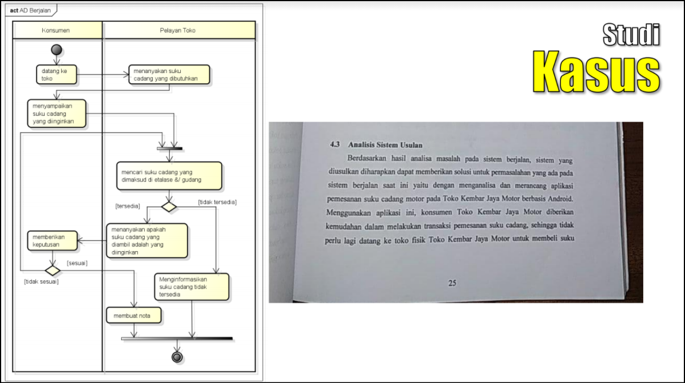
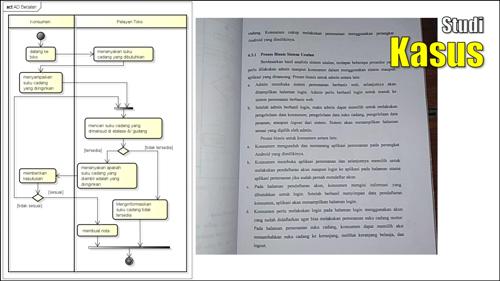
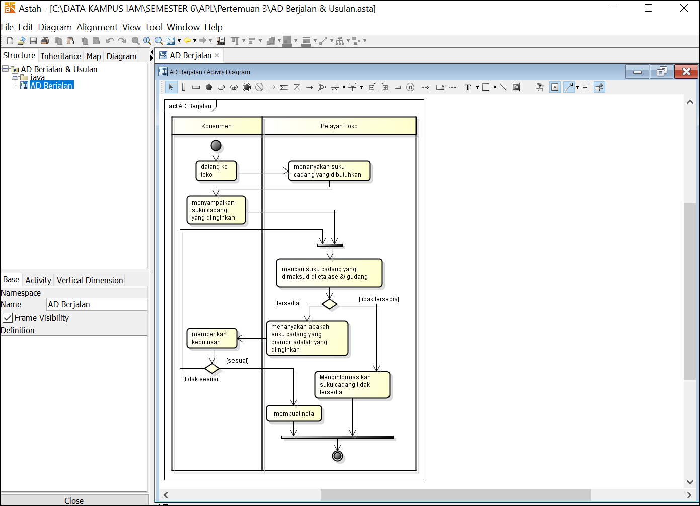
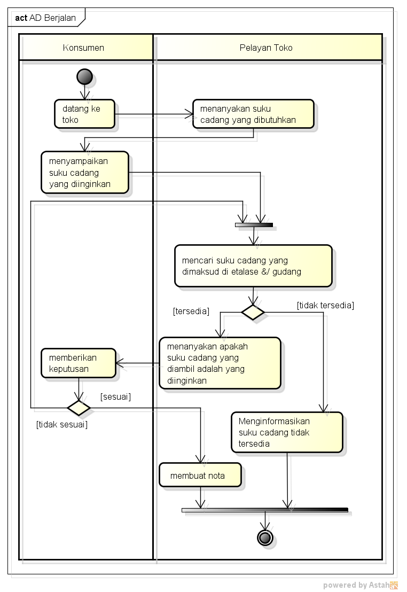

NIM : 1811500011
NAMA : Muhammad Ilham Febrian
Kelompok : TI6J
Hasil saya menyadur materi dan penjelasan video pada pertemuan ke 3:
- Analisa solusi sistem yang diusulkan
- Analisa Proses bisnis sistem yang diusulkan
- Activity Diagram untuk memodelkan sistem usulan
- Sistem usulan itu harus memperoleh manfaat bagi stakeholder (misalnya: pelayanan toko dan konsumen), manfaat ini biasanya untuk memudahkan atau menghemat proses bisnis
- Activity diagram digunakan untuk menggambarkan proses bisnis atau juga untuk menggambarkan aktivitas sistem, bukan detail pada suatu halaman digambarkan menggunakan sequence Diagram.
Activity diagram digunakan untuk menggambarkan proses bisnis atau juga untuk menggambarkan aktivitas sistem, bukan detail pada suatu halaman digambarkan menggunakan sequence Diagram.




Download